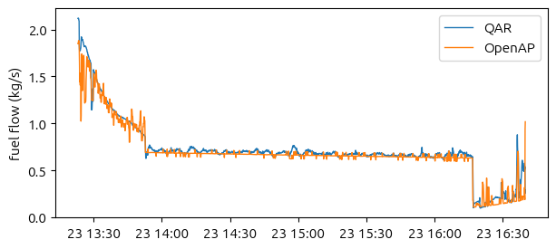

from openap import FuelFlow
# create a fuel flow model for A320
fuelflow = FuelFlow(ac='A320')
# estimate fuel flow during cruise
FF = fuelflow.enroute(mass=60000, tas=230, alt=32000)
# estimate fuel flow at climb, with vertical speed (feet/min)
FF = fuelflow.enroute(mass=60000, tas=200, alt=20000, vs=1000)
# estimate fuel flow at with a given thrust (e.g., derived from drag model)
FF = fuelflow.at_thrust(acthr=50000, alt=30000)
# estimate fuel flow at takeoff
FF = fuelflow.takeoff(tas=100, alt=0, throttle=1)6 üî• Fuel and Emission
OpenAP provides estimations of fuel consumption and emissions based on actual flight trajectory data. The models are based on the following work:
- ICAO Aircraft Engine Emissions Databank link
- Polynomial models derived from the acropole model
6.1 Accuracy of the fuel model
The accuracy of the fuel estimation is greatly improved in the new OpenAP (v2), which is comparable to the BADA 3 fuel model. This is due to the better tuning using data-driven model, acropole, shared by @JarryGabriel.
In best cases, we see errors below 3%, and in the following A320 example shows an accuracy of 1% compared to the QAR data.

For the in-depth analysis of the accuracy affected by mass, wind, and other parameters for this flight, please see the example from the traffic library.
6.2 Basic usage of the fuel and emission modules
6.2.1 Compute aircraft fuel flow:
To estimate fuel flow, you need to provide the aircraft type (e.g., ‘A320’) through the openap.FuelFlow object. The fuel flow model is based on: - aircraft’s mass (in kg), - true airspeed (TAS, in kts), - altitude (in ft), - and vertical speed (optional, in ft/min).
6.2.2 Compute aircraft emissions:
The emission model is based on the fuel flow and aircraft’s true airspeed (TAS) and altitude. The input fuel flow is in kg/s The emissions include CO2, H2O, NOx, CO, and HC, with units in g/s.
from openap import FuelFlow, Emission
fuelflow = FuelFlow(ac="A320")
emission = Emission(ac="A320")
TAS = 350
ALT = 30000
FF = fuelflow.enroute(mass=60000, tas=TAS, alt=ALT, vs=0) # kg/s
CO2 = emission.co2(FF) # g/s
H2O = emission.h2o(FF) # g/s
NOx = emission.nox(FF, tas=TAS, alt=ALT) # g/s
CO = emission.co(FF, tas=TAS, alt=ALT) # g/s
HC = emission.hc(FF, tas=TAS, alt=ALT) # g/s6.3 Estimate fuel and emission from flight data
In the following example, we estimate the fuel consumption for a given flight trajectory data obtained from the OpenSky Network. The sample data can be downloaded from https://github.com/junzis/openap/tree/master/examples.
The following code snippets show how to estimate fuel flow and emissions for this example flight trajectory data.
6.3.1 Data exploration
First, we need to import openap, pandas, and matplotlib libraries.
import pandas as pd
import openap
import matplotlib.pyplot as pltWe also need to define aircraft parameters and import data.
mass_takeoff_assumed = 66300 # kg
fuelflow = openap.FuelFlow("A319")
# Load the data
df = pd.read_csv(
"assets/data/flight_a319_opensky.csv",
parse_dates=["timestamp"],
dtype={"icao24": str},
)
# Calculate seconds between each timestamp
df = df.assign(d_ts=lambda d: d.timestamp.diff().dt.total_seconds().bfill())Let’s see what are the features in this flight dataframe:
df| timestamp | icao24 | typecode | callsign | origin | destination | latitude | longitude | altitude | groundspeed | track | vertical_rate | d_ts | |
|---|---|---|---|---|---|---|---|---|---|---|---|---|---|
| 0 | 2018-01-02 19:53:00+00:00 | 3946e9 | a319 | AFR91HL | LBG | BMA | 49.085861 | 2.349666 | 8200.0 | 255.0 | 327.804266 | 1920.0 | 60.0 |
| 1 | 2018-01-02 19:54:00+00:00 | 3946e9 | a319 | AFR91HL | LBG | BMA | 49.153427 | 2.310861 | 9475.0 | 290.0 | 9.722018 | 960.0 | 60.0 |
| 2 | 2018-01-02 19:55:00+00:00 | 3946e9 | a319 | AFR91HL | LBG | BMA | 49.233367 | 2.361121 | 9975.0 | 332.0 | 23.243919 | 640.0 | 60.0 |
| 3 | 2018-01-02 19:56:00+00:00 | 3946e9 | a319 | AFR91HL | LBG | BMA | 49.319916 | 2.418471 | 11225.0 | 353.0 | 23.517962 | 2752.0 | 60.0 |
| 4 | 2018-01-02 19:57:00+00:00 | 3946e9 | a319 | AFR91HL | LBG | BMA | 49.411652 | 2.478896 | 14175.0 | 368.0 | 23.566915 | 3584.0 | 60.0 |
| ... | ... | ... | ... | ... | ... | ... | ... | ... | ... | ... | ... | ... | ... |
| 111 | 2018-01-02 21:44:00+00:00 | 3946e9 | a319 | AFR91HL | LBG | BMA | 58.978659 | 17.706646 | 13250.0 | 343.0 | 24.471621 | -1408.0 | 60.0 |
| 112 | 2018-01-02 21:45:00+00:00 | 3946e9 | a319 | AFR91HL | LBG | BMA | 59.062826 | 17.781088 | 11800.0 | 326.0 | 24.443955 | -1344.0 | 60.0 |
| 113 | 2018-01-02 21:46:00+00:00 | 3946e9 | a319 | AFR91HL | LBG | BMA | 59.142609 | 17.852051 | 10400.0 | 307.0 | 24.397686 | -1216.0 | 60.0 |
| 114 | 2018-01-02 21:47:00+00:00 | 3946e9 | a319 | AFR91HL | LBG | BMA | 59.217286 | 17.918701 | 9125.0 | 291.0 | 24.541618 | -1216.0 | 60.0 |
| 115 | 2018-01-02 21:48:00+00:00 | 3946e9 | a319 | AFR91HL | LBG | BMA | 59.289505 | 17.990112 | 8075.0 | 291.0 | 28.500577 | -960.0 | 60.0 |
116 rows × 13 columns
Let’s plot the altitude profile of the flight. I will also make the plots more visually appealing.
from matplotlib import dates
import matplotlib
matplotlib.rc("font", size=11)
matplotlib.rc("font", family="Ubuntu")
matplotlib.rc("lines", linewidth=2, markersize=8)
matplotlib.rc("grid", color="darkgray", linestyle=":")
def format_ax(ax):
ax.xaxis.set_major_formatter(dates.DateFormatter("%H:%M"))
ax.spines["right"].set_visible(False)
ax.spines["top"].set_visible(False)
ax.yaxis.set_label_coords(-0.1, 1.03)
ax.yaxis.label.set_rotation(0)
ax.yaxis.label.set_ha("left")
ax.grid()
fig, (ax1, ax2, ax3) = plt.subplots(3, 1, figsize=(5, 5), sharex=True)
ax1.plot(df.timestamp, df.altitude)
ax2.plot(df.timestamp, df.groundspeed)
ax3.plot(df.timestamp, df.vertical_rate)
ax1.set_ylabel("altitude (ft)")
ax2.set_ylabel("groundspeed (kts)")
ax3.set_ylabel("vertical rate (ft/min)")
for ax in (ax1, ax2, ax3):
format_ax(ax)
plt.tight_layout()
plt.show()6.3.2 Fuel flow calculation
Next, we iterate over the timestamp to calculate fuel flow and mass during the flight.
mass_current = mass_takeoff_assumed
fuelflow_every_step = []
fuel_every_step = []
for i, row in df.iterrows():
ff = fuelflow.enroute(
mass=mass_current,
tas=row.groundspeed,
alt=row.altitude,
vs=row.vertical_rate,
)
fuel = ff * row.d_ts
fuelflow_every_step.append(ff)
fuel_every_step.append(ff * row.d_ts)
mass_current -= fuel
df = df.assign(fuel_flow=fuelflow_every_step, fuel=fuel_every_step)Then, we can visualize the fuel flow during the flight.
plt.figure(figsize=(7, 2))
plt.plot(df.timestamp, df.fuel_flow, color="tab:red")
plt.ylabel("fuel flow (kg/s)")
format_ax(plt.gca())
plt.show()With the new dataframe, we can calculate total fuel consumption by summing the fuel consumption at overall time steps:
total_fuel = df.fuel.sum().astype(int)
print(f"Total fuel: {total_fuel} kg")Total fuel: 5052 kg6.3.3 Emission calculation
The emission calculations are based on the fuel consumption using the openap.Emission class.
We can calculate the emissions for the entire flight and append them as new columns to the dataframe as follows:
emission = openap.Emission(ac="A319")
df = df.assign(
co2_flow=lambda d: emission.co2(d.fuel_flow),
h2o_flow=lambda d: emission.h2o(d.fuel_flow),
soot_flow=lambda d: emission.soot(d.fuel_flow),
sox_flow=lambda d: emission.sox(d.fuel_flow),
nox_flow=lambda d: emission.nox(d.fuel_flow, tas=d.groundspeed, alt=d.altitude),
co_flow=lambda d: emission.co(d.fuel_flow, tas=d.groundspeed, alt=d.altitude),
hc_flow=lambda d: emission.hc(d.fuel_flow, tas=d.groundspeed, alt=d.altitude),
)Let’s visualize the emission flows:
fig, axes = plt.subplots(7, 1, figsize=(5, 7), sharex=True)
axes = axes.flatten()
labels = dict(
co2_flow="CO2 (g/s)",
h2o_flow="H2O (g/s)",
soot_flow="Soot (g/s)",
sox_flow="SOx (g/s)",
nox_flow="NOx (g/s)",
co_flow="CO (g/s)",
hc_flow="HC (g/s)",
)
for i, (k, v) in enumerate(labels.items()):
axes[i].plot(df.timestamp, df[k], color="tab:brown")
axes[i].set_ylabel(v)
format_ax(axes[i])
plt.tight_layout()
plt.show()Note that CO2, H2O, Soot, and SOx are linear correlated to the fuel flow, following the coefficients from the paper Global Mortality Attributable to Aircraft Cruise Emissions.
6.3.4 Final data
The emissions at each time step are also calculated as follows. Note that we divide values by 1000 to obtain the emissions in kg.
df = df.eval(
"""
co2 = co2_flow * d_ts / 1000
h2o = h2o_flow * d_ts / 1000
soot = soot_flow * d_ts / 1000
sox = sox_flow * d_ts / 1000
nox = nox_flow * d_ts / 1000
co = co_flow * d_ts / 1000
hc = hc_flow * d_ts / 1000
"""
)We can take a look at the final data with fuel flow and emissions columns.
df[["timestamp", "fuel", "co2", "h2o", "soot", "sox", "nox", "co", "hc"]].round(4)| timestamp | fuel | co2 | h2o | soot | sox | nox | co | hc | |
|---|---|---|---|---|---|---|---|---|---|
| 0 | 2018-01-02 19:53:00+00:00 | 81.3691 | 257.1265 | 100.0840 | 0.0024 | 0.0976 | 1.2232 | 0.0993 | 0.0027 |
| 1 | 2018-01-02 19:54:00+00:00 | 61.1136 | 193.1191 | 75.1698 | 0.0018 | 0.0733 | 0.7674 | 0.1380 | 0.0027 |
| 2 | 2018-01-02 19:55:00+00:00 | 57.3222 | 181.1380 | 70.5063 | 0.0017 | 0.0688 | 0.6956 | 0.1402 | 0.0026 |
| 3 | 2018-01-02 19:56:00+00:00 | 88.5218 | 279.7288 | 108.8818 | 0.0027 | 0.1062 | 1.4456 | 0.0554 | 0.0025 |
| 4 | 2018-01-02 19:57:00+00:00 | 85.7259 | 270.8939 | 105.4429 | 0.0026 | 0.1029 | 1.3834 | 0.0540 | 0.0025 |
| ... | ... | ... | ... | ... | ... | ... | ... | ... | ... |
| 111 | 2018-01-02 21:44:00+00:00 | 27.3882 | 86.5467 | 33.6875 | 0.0008 | 0.0329 | 0.2163 | 0.3043 | 0.0143 |
| 112 | 2018-01-02 21:45:00+00:00 | 26.7537 | 84.5418 | 32.9071 | 0.0008 | 0.0321 | 0.2061 | 0.3411 | 0.0170 |
| 113 | 2018-01-02 21:46:00+00:00 | 26.5316 | 83.8399 | 32.6339 | 0.0008 | 0.0318 | 0.2016 | 0.3610 | 0.0184 |
| 114 | 2018-01-02 21:47:00+00:00 | 25.4723 | 80.4924 | 31.3309 | 0.0008 | 0.0306 | 0.1865 | 0.3963 | 0.0210 |
| 115 | 2018-01-02 21:48:00+00:00 | 28.2236 | 89.1865 | 34.7150 | 0.0008 | 0.0339 | 0.2214 | 0.3331 | 0.0165 |
116 rows × 9 columns
Finally, we can obtain the total fuel consumption and emissions for the entire flight (unit in kg).
df[["fuel", "co2", "h2o", "soot", "sox", "nox", "co", "hc"]].sum().round(2)fuel 5052.25
co2 15965.10
h2o 6214.27
soot 0.15
sox 6.06
nox 55.09
co 18.27
hc 0.46
dtype: float64